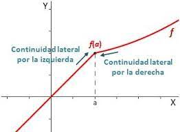

La continuidad es un concepto fundamental en cálculo que indica si la gráfica de una función se puede dibujar sin levantar el lápiz. Intuitivamente, una función es continua en un punto si no presenta saltos, huecos o asíntotas verticales en ese punto.
De forma formal, una función f(x) es continua en un punto x = c si se cumplen las siguientes tres condiciones:
Si alguna de estas condiciones no se cumple, entonces la función es discontinua en x = c.
